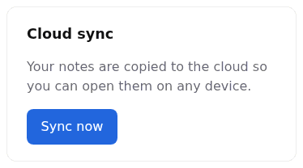
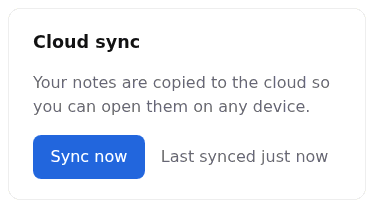

mexxi: Maltese for “to lead, to manage”
Coding agents write code fast. mexxi makes them prove it works.
Give the coding agent you already use a task. You get back a pull request that passes your repository’s own checks, with screenshots from a real browser and a plain call on whether it’s safe to merge. You still decide.
The slow part has moved
-
Now
Coding agents can take a whole task: read the code, make the change and open a pull request.
-
The catch
What comes back is hard to trust. “Done, all tests pass” is a claim, and checking it means reading every line.
-
With mexxi
The checking happens before the pull request reaches you, and the pull request shows the proof.
Without mexxi, you verify. With mexxi, it’s verified and you decide.
The same request, “show the last sync time on the settings page”, given to the same agent twice in a small demo app: once on its own, once with mexxi.
Before

After

| Without mexxi | With mexxi |
|---|---|
| What changed for the user? | |
| The Cloud sync card shows when notes last synced, and a failed sync says so. | The same, worded as “Last synced 5 minutes ago” or “Not synced yet”. |
| Does it work? | |
npm run verify passes; no new tests. |
Verify passes with 4 new tests, checked in a browser at 3 sizes, reviewed twice. |
| What does it look like? | |
| Described in words; no screenshots. | Before and after shots, plus the never-synced and failed states. |
| Is it safe to merge? | |
| No call made; it notes there are no API or store changes. | Safe to merge and easy to undo: a page-only change. |
| What’s left for me? | |
| Not stated. | Press Sync now on Settings and check it reads “Last synced just now”. |
Read both in full: without mexxi and with mexxi. How to review a mexxi pull request.
How it works
-
Get the repository ready
Once per repository,
/lestiopens a pull request that gives it one pass/fail command for “it works”, such asnpm run verify: your tests, linters and build. Where tests are missing, it says so rather than inventing them. -
Ask for a change
Type
/wettaqand the request in plain words. The agent works in its own copy of the repository, writes down what done means, and builds it with tests. -
Prove it
Your checks must pass before and after. For a UI change it opens the app in a real browser at phone, tablet and desktop sizes. A second agent, which cannot edit code, reviews substantial changes.
-
You decide
The pull request’s first screen gives the merge call, the one check worth doing yourself, and the evidence. Merge it, or ask
/wettaqfor changes.
Every step of a run, in detail · Every command, and the problem it solves
What it doesn’t do
-
It never merges
The merge is always your decision. A guard blocks pull request merge commands as a backup to the rules.
-
It never pushes to your main branch
Every task gets its own branch and pull request, and nothing is ever force-pushed.
-
It isn’t a service
It runs on your machine, with the agent and subscription you already have. There is no server and no account. One experiment, Jev triage, sends task metadata (never code) to an outside model, and it is off unless you turn it on.
-
It doesn’t ask you to trust one AI grading another
The proof is mechanical: your own checks pass or fail, and screenshots show the page. The reviewer agent is an extra opinion on top, never the proof. New tests and the merge call are still the agent’s work, so the pull request lists the tests and marks a call no reviewer checked as self-assessed.
Every tool speaks Maltese
The tools are named in Maltese, the author’s native language, like Verifika. Each name is an everyday word for the tool’s job: learn the word and you know the tool.
-
mexxi · verb
to lead, to manage
The whole workflow: it leads the coding agent you already use from a request to a pull request that proves its own work.
-
wettaq · verb
to carry out
/wettaq— Takes a request in plain words to one tested, reviewed pull request. -
lesti · verb
to get something ready
/lesti— Opens one pull request that gets a repository ready for mexxi. -
ittestja · verb
to test
/ittestja— Tries a page or flow in a real browser and reports what is broken, without changing code. -
ibni · verb
to build
The command-line tool the agent runs to give each task its own copy of the repository, and to push only the exact code recorded as passing its checks.
-
fassal · verb
to design
/fassal— Writes a product's UX principles, so agents make interface decisions the way you would. -
sewwi · verb
to repair, to mend
/sewwi— Audits or changes the workflow itself: its commands, skills, agents and rules. -
irrifletti · verb
to reflect
/irrifletti— Looks back at your recent agent sessions, privately, to show whether a change to the workflow helped. -
ibda · verb
to begin, to start
The setup skill a pasted prompt points to: it installs, repairs or upgrades mexxi.
Get started
What you need
- Claude Code, Codex or OpenCode: the agent that does the work.
- Node.js 22.13 or newer, and Git: they run mexxi and its copies of your repository.
ghfor GitHub orglabfor GitLab, signed in: opens the pull request and sees when it merges.
Optional
- Playwright MCP: lets the agent drive a real browser.
- OpenCodeReview (
ocr): picks what the reviewer looks at. ffmpeg: turns recordings into GIFs.
Set up mexxi for me. Read
https://raw.githubusercontent.com/alexportelli12/mexxi/main/skills/ibda/SKILL.md and
follow it.
Paste it into your agent. It checks what you have and shows what it will change first.
Make this repository ready for mexxi: run /lesti here.
Paste it in a repository. You get one pull request that adds what mexxi needs.
Then ask for a change: /wettaq show the last sync time on the settings page.